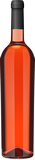

WineryNSK

Вино восьмилетней выдержки "Carmel Single Vineyard 2008" прямиком из старейшей винодельни Израиля.
Букет богат солнечными нотками слегка терпким вкусом, характерным для винограда этой местности.
Насладитесь прекрасным вкусом тепла и безмятежности Земли Обетованной.
У вина привлекательный, глубокий фиолетовый цвет. Вино демонстрирует полный, богатый, хорошо сбалансированный вкус с фруктовыми тонами и долгим послевкусием. Вино соблазняет выразительным ароматом, сотканным из нот черной смородины, ликера Крем де Кассис и средиземноморских трав.
Вино прекрасно сочетается с дичью, красным и белым мясом, сырами, паштетами.
| заголовок1 | заголовок2 |
|---|---|
| значение1 | значение2 |
| значение3 | значение4 |
| значение5 | значение6 |